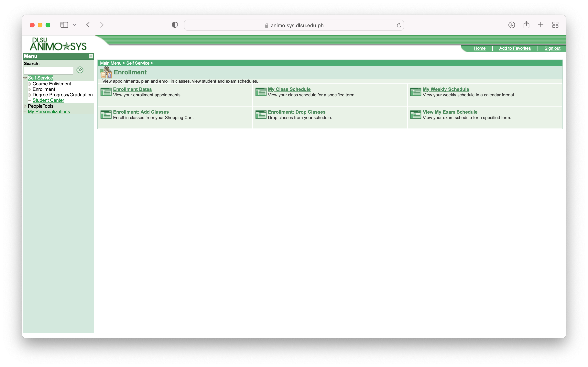

Discover and participate in various student communities and threads. Find information about pre-enlistment, enlistment, and other student-related concerns.
Get insights and tips about pre-enlistment activities and course selection.
Discuss and share experiences related to the enlistment process and course registration.
Join conversations about various student-related concerns and engage with the community..